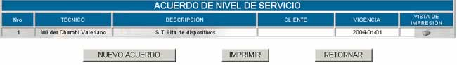
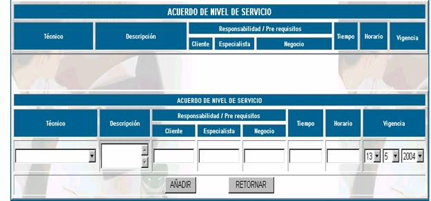

ANS
El acuerdo a nivel de servicio define el
contenido mínimo de la disponibilidad, contabilidad, desempeño, capacidad de
crecimiento, niveles de soporte proporcionados al usuario, es definido por la
unidad de sistemas para cada procedimiento.
Cuando usted ingrese a esta opción podrá
realizar el acuerdo de nivel de servicio:

Nro;
especifica el número correlativo que toma el acuerdo de nivel de servicio.
Técnico; especifica el nombre de la persona que realiza el
acuerdo de nivel de servicio.
Descripción; especifica la descripción de la información.
Cliente; especifica el nombre de la persona o empresa que
solicita el acuerdo a nivel de servicio.
Vigencia; se define el momento a partir del cual entra en
vigencia el servicio, se definirá fecha.
Vista de Impresión; genera el reporte para impresión del ANS.
Nuevo Acuerdo; para insertar un nuevo acuerdo usted debe llenar los
datos que se muestran en la pantalla siguiente:

Técnico; debe escoger el nombre del técnico que realiza
el acuerdo de nivel de servicio.
Descripción; se
realiza la descripción del servicio y del acuerdo a nivel de servicio que se
está registrando, debiendo anotar los requerimientos mínimos del usuario.
Responsabilidad
Prerrequisitos. Cliente / Especialista / Negocio; comprende
las responsabilidades de autorización, información, coordinación y cualquier
otra actividad o prerrequisito necesarios para brindar el servicio acordado.
Tiempo; el estipulado para brindar el servicio a partir del
cumplimiento de las responsabilidades consideradas requisitos para el servicio.
Horario; se define
el horario para recibir o atender estas solicitudes.
Vigencia; se define
el momento a partir del cual entra en vigencia el servicio, se definirá fecha.
Imprimir; haciendo click en esta
opción usted podrá obtener un reporte de la lista de acuerdo de nivel de
servicio.